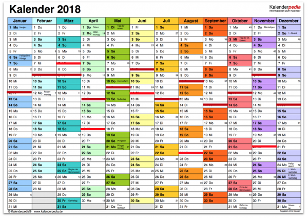
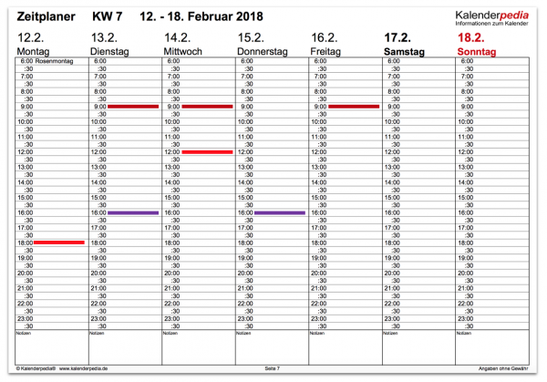
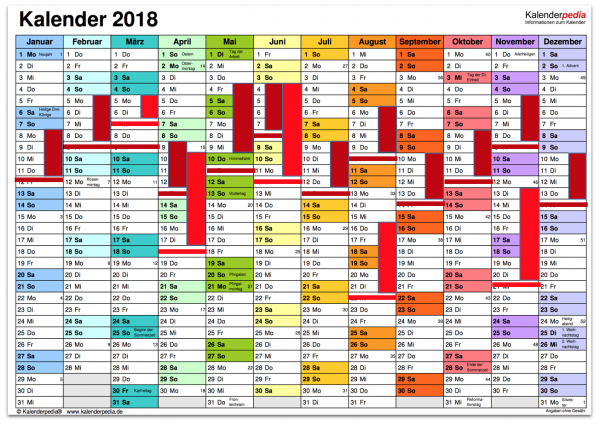
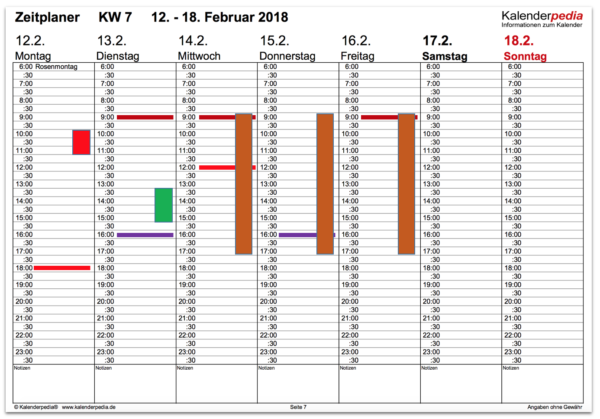

Das Einmaleins der Kalendereinträge
Es ist gar nicht so einfach, über den rechten Gebrauch des Kalenders zu sprechen. Das habe ich gerade in einigen eintägigen Zeitmanagement-Workshops bemerkt, die an vier aufeinander folgenden Tagen stattfanden. Indem ich jeden Tag einer anderen Gruppe dieselben Techniken vermitteln musste, konnte ich Muster in meinen Erklärungen sowie in den Reaktionen der Teilnehmer erkennen, die mir bis dahin gar nicht so aufgefallen waren. Leider zeigte sich in dieser schnellen Abfolge derselben Inhalte prononciert, wenn Dinge in meinem Kopf klar sind, müssen sie deshalb noch lange nicht genauso klar auch bei anderen sein. So verhielt es sich mit dem Begriff Kalendereinträge. Es lohnt sich daher, denke ich, dass ich meine Klarheit hier einmal in einem Artikel „zu Papier bringe“. Dann kann ich darauf in Zweifelsfällen zum Nachlesen verweisen.
Also, worum geht es? Das Thema ist der Umgang mit dem Kalender. Der ist für mich das zentrale Zeitmanagement-Werkzeug. Ob papierern oder digital: Nur durch eine sorgsame Planung und Dokumentation Ihrer Arbeit in einem Kalender bekommen Sie einen belastbaren Überblick darüber, was zu tun ist und was Sie tatsächlich getan haben. Wie diese Planung vonstatten gehen sollte, möchte ich hier allerdings nicht im Detail erklären. Darüber können Sie hier viel lesen: Zeitmanagement. Vielmehr will ich mich auf einige Begriffe konzentrieren, die im Zusammenhang mit der Kalenderplanung immer wieder eine Rolle spielen.
Ausgangspunkt und „Stein des Anstoßes“ ist für mich der Begriff Termin.
Wer wüsste nicht, was ein Termin ist, oder? Ist doch klar, ein Termin ist, was man in den Kalender einträgt. Ich habe ständig viele Termine, Sie haben ständig viele Termine. Manche werden von außen vorgegeben, andere setzen Sie sich selbst. Kalendereinträge sind Tagesgeschäft.
In den Workshops haben da die Teilnehmer tapfer genickt, ich konnte ihnen dann meine Empfehlungen für den Umgang mit dem Kalender auch vermitteln. Nur erschien mir das von Mal zu Mal umständlicher. Ich bemerkte, dass ich Termin mit zwei Bedeutungen überladen hatte. Das darf natürlich nicht sein. Wir brauchen eine klare Sprache für das Zeitmanagement bzw. die Kunst der Aufmerksamkeitsgestaltung.
Frist
Die erste Bedeutung, die ich bisher in Termin mitgedacht hatte, war die eines Zeitpunktes. Das ist entweder ein Anfangszeitpunkt oder ein Endzeitpunkt.
Wenn ich vom „Termin für ein Telefonat“ spreche, dann ist der Fokus auf dem Anfangszeitpunkt. Für den mache ich im Kalender einen Eintrag, damit ich ihn nicht vergesse.
Wenn ich hingegen vom „Termin für ein Angebot“ spreche, dann ist der Fokus auf dem End- oder Abgabezeitpunkt. Den muss ich im Kalender vermerken, damit ich ihn nicht vergesse.
Im Gespräch miteinander ist durch den Kontext klar, was gemeint ist, wenn man in beiden Fällen von Termin spricht. Präzise ist das jedoch nicht. Denn Termin bedeutet mehr, wie ich unten erklären werde.
Wenn ich in Workshops oder in einem Artikel wie diesen präzise sein will, um Missverständnisse von vornherein auszuschließen, werde ich in Zukunft für diese Bedeutung deshalb einen anderen Begriff wählen.
Das Deutsche hält dafür ja auch ein eigenes Wort bereit. Präzise ist es, wenn man für diese Bedeutungen von einer Frist spricht. Alternativ kann man auch Stichtag oder deadline sagen.
Frist bzw. Stichtag bezeichnen also für mich bei der Kalenderplanung lediglich Zeitpunkte. Denken Sie sich eine Linie, die Sie im Kalender durch einen Tag oder eine Woche ziehen.
Hier ein Jahreskalender mit einigen monatlichen Fristen und zusätzlichen sporadischen Stichtagen und deadlines:

Oder ein Wochen- bzw. Tageskalender mit Fristen:

In allen Fällen ist die essenzielle Information ein Zeitpunkt. Das mag lediglich ein Tag bzw. Datum sein, es kann aber auch eine spezifische Uhrzeit sein, wann etwas beginnen oder enden soll.
Aufwand
Um die zweite und eigentliche Bedeutung von Termin zu verstehen, muss ich nun einen weiteren Begriff einführen: den Aufwand.
Aufwand ist die Menge an Zeit, die nötig ist, um eine Aufgabe zu erledigen. Für die Zubereitung eines Mittagessens mag der Aufwand 1 Stunde betragen, für die Erarbeitung eines Jahresabschlusses mag er 8 Stunden betragen, für die Ausarbeitung eines Angebotes mögen 20 Stunden nötig sein.
Ich finde die Zeiteinheit Stunden für die Angabe eines Aufwandes hilfreich, weil bei größerem Aufwand dadurch schnell klar wird, dass er nicht „in einem Stück“ erbracht werden kann.
Aufwand bezeichnet wirklich nur die konkret nötige Zeit, um ein Ergebnis herzustellen. Wenn Kunden in Abgängigkeit von verbrauchter Zeit für eine Leistung bezahlen, dann bezahlen sie für den Aufwand.
Wenn ein Zeitraum für die Erledigung einer Aufgabe abgeschätzt wird, dann geht es gewöhnlich ebenfalls um den Aufwand.
Dauer
Wenn Sie den Aufwand für eine Aufgabe abschätzen, wissen Sie allerdings nicht automatisch den Erledigungs- oder Lieferzeitpunkt. Ob Sie eine Frist einhalten können, ist ungewiss. Bei der Abarbeitung kann einiges dazwischenkommen: der Beginn der Arbeit kann sich verzögern, Sie können unterbrochen werden, es können Informationen fehlen, Sie können über Missverständnisse stolpern… Irgendetwas ist immer, vor allem, je größer der Aufwand ist und je weniger Erfahrung Sie mit dem Thema der Aufgabe bzw. Werkzeugen und Materialien haben und je abhängiger Sie von anderen bei der Herstellung des Ergebnisses sind.
Bis eine Aufgabe erledigt ist, kann es also dauern. Die Dauereiner Aufgabe bezeichnet deshalb den Zeitraum bis zum Abschluss der Arbeit an ihr. Es gilt: die Dauer ist immer größer als der Aufwand.
Der Aufwand für ein Mittagessen beträgt 1 Stunde, doch wenn Sie um 11:00 mit der Zubereitung beginnen und durch einen Anruf unterbrochen werden und dann auch noch merken, dass eine Zutat fehlt, die Sie schnell noch beim Kaufladen um die Ecke besorgen müssen, dann sind Sie erst um 12:30 fertig. Die Dauer der Zubereitung beträgt mithin 1,5 Stunden und ist um 50% größer als der Aufwand.
Solch eine Differenz zwischen Aufwand und Dauer ist ein ständiger Übelstand in eigentlich allen Unternehmen. Seine Verringerung ist denn auch ein wichtiges Thema im Zeitmanagement. Doch auch darauf möchte ich heute nicht weiter eingehen. Wichtig an dieser Stelle ist mir nur, dass Sie Aufwand mit Dauer nicht verwechseln und bei der Kalenderplanung den Unterschied berücksichtigen.
Auch wenn Sie Aufwand schätzen, taucht in der Kalenderplanung nämlich vor allem Dauer auf. Nehmen Sie diesen Kalender als Beispiel:

Die Blöcke zeigen an, von wann bis wann jemand gedenkt, an einer Aufgabe zu arbeiten. Da dauert die Arbeit z.B. vom 4.5. bis 9.5. Das sind 6 Tage, während bei anderen Fristen gleicher Farbe nur 4 Tage gebraucht werden. Doch in diesem Zeitraum liegt ein Wochenende. Der Aufwand ist hier also nicht gestiegen, sondern nur die Dauer.
Ebenfalls ist nicht anzunehmen, dass die Zeiträume für ununterbrochene Arbeit an Aufgaben stehen. Selbst wenn die Dauer mit nur 4 Tagen im Kalender angeben ist wie z.B. vom 5.2. bis 8.2., wird der Aufwand nicht 96 Stunden betragen und noch nicht einmal 32 Stunden. Die Blöcke im Kalender sind Erinnerungen daran, dass an diesen Tagen die Aufmerksamkeit auf einer bestimmten Aufgabe gerichtet werden soll. Doch wie viel Zeit genau pro Tag in sie fließt, ist eine ganz andere Sache. Vielleicht beträgt der Aufwand nur 16 Stunden, die gewöhnlich auf 4 Tage verteilt werden, um gleichzeitig auch noch an anderen Aufgaben arbeiten zu können. Das ist z.B. ganz offensichtlich im Zeitraum vom 4.6. bis 7.6. Dort stehen zwei Aufgaben parallel im Kalender.
Termin
Und nun abschließend zur für mich eigentlichen Bedeutung von Termin.
Ein Termin ist in meinem Denken erstens immer eine Kombination aus Frist und Dauer. Und zweitens ist an einem Termin eine weitere Partei beteiligt, die während der Dauer auf die eine oder andere Weise anwesend ist.
Die Frist bezeichnet bei einem Termin den Anfangszeitpunkt. Wenn Sie von einem „Termin beim Zahnarzt“ oder einem „Besprechungstermin“ oder einem „Termin des Workshops“ sprechen, dann meinen Sie 1) den Zeitpunkt zu dem der Termin beginnt, 2) eine bestimmte Dauer und 3) eine weitere Partei, mit der Sie diesen Termin gemeinsam haben. Präzise formuliert sehen die Beispiele z.B. so aus: (12.2.18 10:00, 1 Stunde, Zahnarzt), (13.2.18 13:30, 1,5 Stunden, Abteilungsleiter Müller und Schmidt), (14.2.18 9:00, 3 Tage, Entwicklungsteam).

Zusammenfassung Kalendereinträge
Nur weil im Kalender ein Block reserviert ist, heißt das noch nicht, dass es sich um einen Termin handelt. Das hatte ich bisher nicht genau genug in Zeitmanagement-Workshops herausgearbeitet. Zwar haben die Teilnehmer und ich uns immer irgendwie verstanden… doch ich kann meine Darstellung noch verbessern.
In Zukunft werde ich genau unterscheiden, was ich damit meine, wenn ich von der Planung von Aufgaben spreche. Jede Aufgabe gehört in den Kalender, wenn Sie wirklich wissen wollen, wo Ihre Zeit bleibt und unter welcher Last Sie leiden. Jede Aufgabe gehört in den Kalender, wenn Sie einen Überblick behalten wollen und verlässlich sein wollen. Wenn die Aufgaben zahlreich aber sehr klein sind, der administrative Aufwand für die Kalendereinträge im Verhältnis zu groß wäre, tragen Sie einfach einen Aufgabenblock ein.
Doch nicht jede Aufgabe wird zu einem Termin. Termine sind Blöcke im Kalender für Zeiträume, die Sie mit anderen verbringen. Termine sind koordiniert mit weiteren Parteien.
Alle Termine haben eine Frist, d.h. einen Anfangszeitpunkt, und sie haben auch noch eine Dauer. Termine einzuplanen und entsprechende Kalendereinträge vorzunehmen ist daher der einfachste Teil Ihrer Zeitplanung.
Andere Aufgaben sind leider nicht unbedingt so genau spezifiziert. Um auch sie zu planen, müssen Sie den Aufwand schätzen und auch ihnen eine Frist geben (zumindest einen Anfangszeitpunkt), falls die fehlen sollte. Dann platzieren Sie sie im Kalender – und falls der Aufwand über wenige Stunden hinausgeht, verteilen Sie ihn über aufeinander folgende Tage.
Damit definieren Sie zwar keinen Termin in meinem Sinne, doch zumindest sichern Sie zu, dass ihre Aufgaben en bloc schnellstmöglich abgearbeitet werden, sobald es Zeit ist.
Weitere Artikel

Puffer sichern Flow
Es wird allerhöchste Zeit, sich von der Idee, dass nur wer am Limit arbeitet, effizient sei, zu verabschieden. Unter Volllast, ganz ohne Puffer zu arbeiten ist eine „gute“ Voraussetzung für Unzuverlässigkeit, Fehler …

Kollaboration im Office mit Kanbanize
Ein Tool, was mich für die digitale Kollaboration im Office begeistert ist Kanbanize. Dort kann man wirklich sehr fortgeschritten und smart zusammenarbeiten. Mit seinen verschiedenen Perspektiven auf den Flow im Office, der …